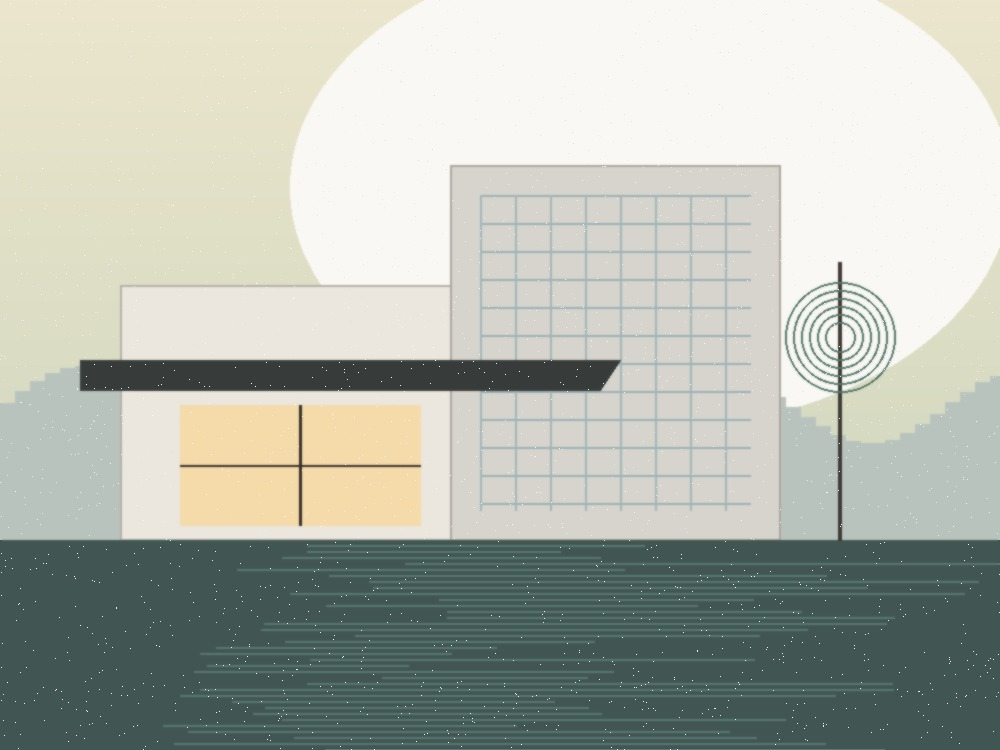
ARXITEKTURAVilla Monolith
Asriy bambukzor o'rmoni bilan uyg'unlashgan monolitik beton va kuygan kedr villasi.
Ortiqcha dabdabadan voz kechib, xomashyoning tabiiy uyg'unligini namoyon etamiz. Butun dunyo bo'ylab ekologik toza turar-joylar, haykaltaroshlik pavilyonlari va betakror fazoviy muhitlarni barpo etamiz.
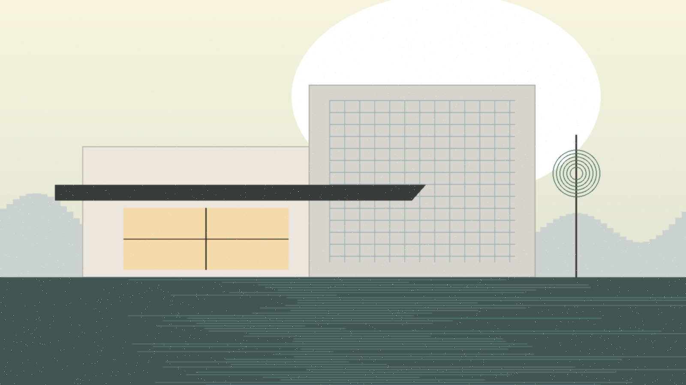
AIA Global Me'morchilik Mukofoti 2025
Villa Monolith Kioto Pavilyoni"Haqiqiy arxitektura — ortiqcha bezak qo'shish emas, balki fazoning ruhiyatini yo'qotmagan holda hamma keraksiz narsalarni olib tashlashdir."
Zero Design studiyasida biz yapon Wabi-Sabi falsafasini, Skandinaviya yorug'lik nozikligini va zamonaviy past uglerodli muhandislikni birlashtiramiz. Har bir loyiha yer, madaniyat va material sofligi o'rtasidagi chuqur muloqotdan boshlanadi.
Biz mahalliy travertin, paxsakor loy va nasha-betondan (hempcrete) foydalanamiz, bu esa binoning tabiatga faqat foyda keltirishini ta'minlaydi.
Har bir deraza o'rni va konsol soyabonlari quyosh nurining kun davomida harakatlanishi va jonli soyalar yaratishi uchun maxsus hisoblanadi.
Monolit beton ustunlardan tortib, eshik tutqichlari va akustik sirtlargacha barcha detallar yagona bosiq tilda gaplashadi.
Yagona ijodiy rahbarlik ostida faoliyat yurituvchi to'rtta ixtisoslashgan yo'nalish.
Passiv quyosh yo'nalishi va kam uglerodli materiallar asosida quriladigan xususiy villalar, madaniy pavilyonlar va eko-dam olish maskanlari.
Tabiiy Rim toshlari, yaponcha kuydirilgan yog'och va mualliflik minimalist mebellari asosida yaratilgan sokin yashash makonlari.
Tashrif buyuruvchilarni ko'p hissiy tajribaga chorlaydigan ko'rgazma zallari, mehmonxona lobbilari va brend maskanlari.
Unreal Engine 5 asosida real vaqt rejimida arxitekturani tekshirish, virtual sayohat va interaktiv veb-fazolar.
Osiyo, Yevropa va Markaziy Osiyo bo'ylab barpo etilgan me'moriy haqiqatlar arxivi.

ARXITEKTURAAsriy bambukzor o'rmoni bilan uyg'unlashgan monolitik beton va kuygan kedr villasi.
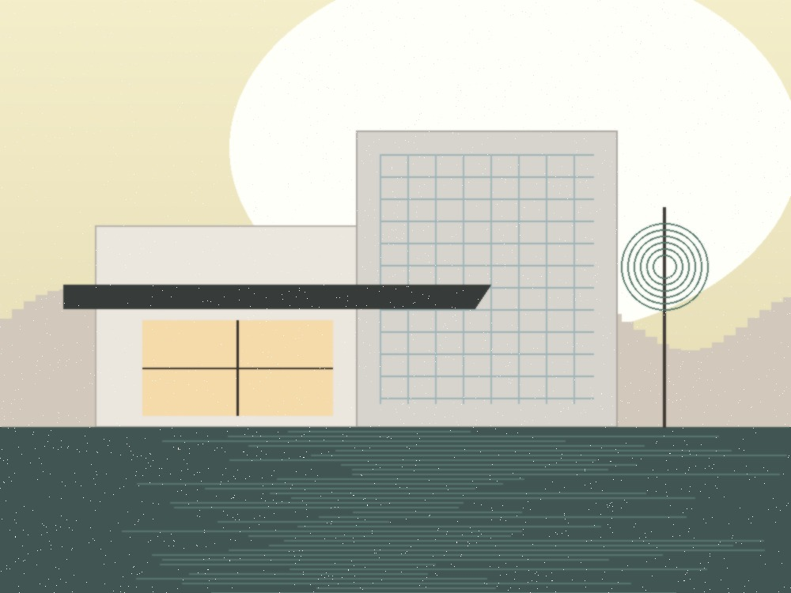
INTERYERRim Navona travertini va satin fluted bronzadan ishlangan sokin pentxaus.
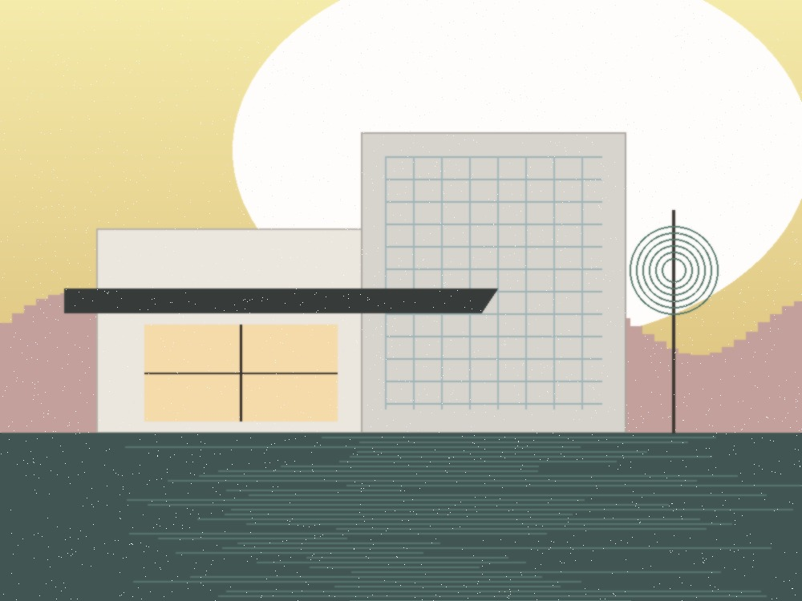
FAZOVIY MUHITQizil tuproq paxsasi va kinetik yorug'likdan bunyod etilgan noyob brend tajriba ibodatxonasi.
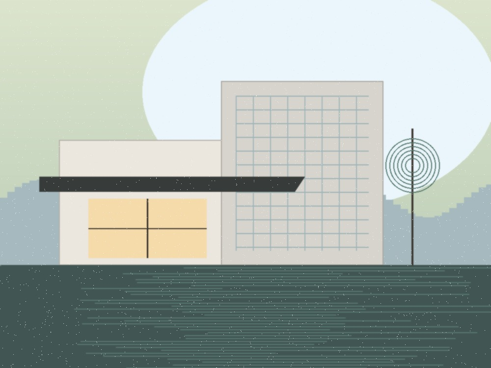
ARXITEKTURAOslofyordi suvlari uzra osilgan nol-emissiyali geotermal yog'och shohona shole.
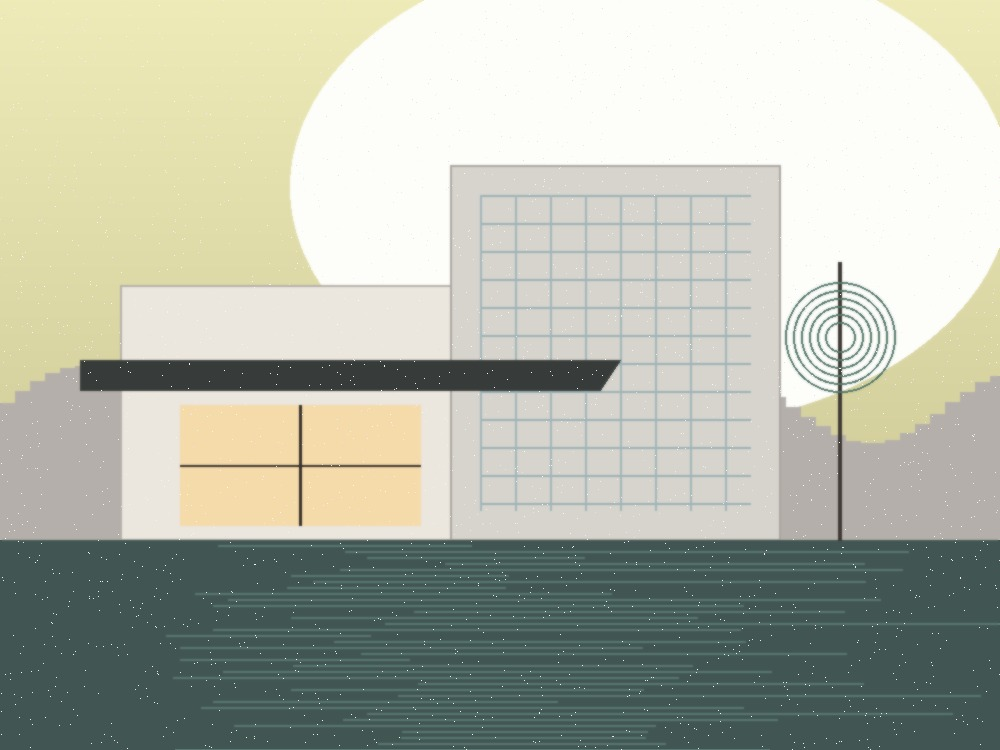
INTERYEREgilgan eman panellari va akustik kigiz arkalari orqali yangilangan ijodiy studiya.
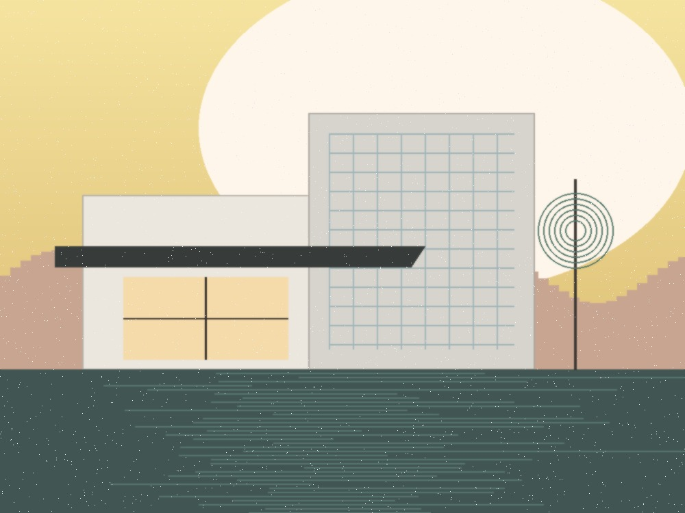
ARXITEKTURAMarkaziy Osiyo hovli madaniyati, tabiiy ko'l va shisha konsollarning zamonaviy sintezi.
Biz hech qachon sun'iy bezak ishlatmaymiz. Har qanday material ustiga bosib, uning kelib chiqishi va xususiyatlari bilan tanishing.
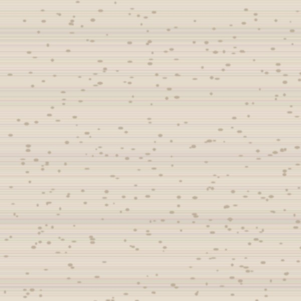
Qadim zamonlardan buyon iliq asalrang jilosi va organik chiziqli qatlamlari bilan qadrlanadi. Xonadagi namlikni tabiiy muvozanatlash uchun g'ovaklari to'ldirilmasdan jilolanadi.
"Zero Design studiyasi bizning bosh ofisimizni shunchaki chizib bermadi, balki brendimizning jismoniy vujudiga o'chmas ruh bag'ishladi. Ularning toshdan yaratilgan monolit zallariga qadam qo'yganda odam o'zgacha bir xotirjamlik va ulug'vorlikni his etadi."
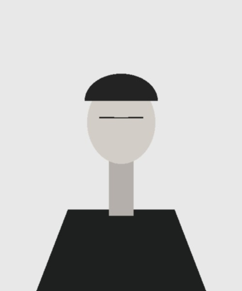
Materialshunoslik, soyalar fizikasi va nol-uglerodli me'morchilikka oid tadqiqotlar.
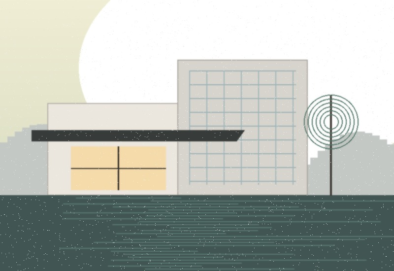
Deraza mutanosibligini hisoblash orqali kunduzgi quyosh nurlarini vizual she'riyatga aylantirish san'ati.
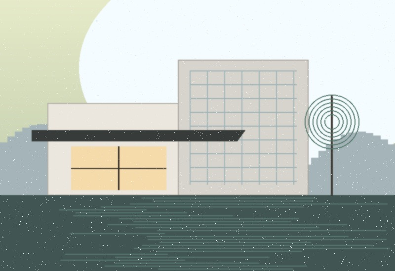
Standart g'isht o'rniga asrlar davomida havoning karbon gazini yutuvchi tabiiy bloklardan foydalanish.
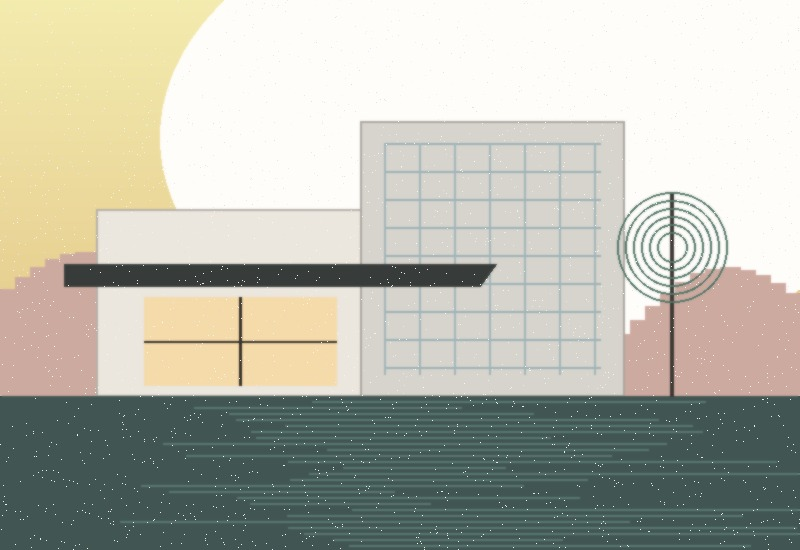
Toshkentdagi villamizda an'anaviy hovli soyasi orqali havoni tabiiy sovutish tajribasi.
Har bir loyihada individual mahorat va e'tiborni kafolatlash maqsadida studiyamiz yiliga cheklangan miqdordagi buyurtmalarni qabul qiladi.
32 Higashiyama-ku, Kioto 605-0001, Yaponiya
+81 (75) 541-2090
Via Brera 14, 20121 Milan, Italiya
+39 (02) 8901-4432
Amir Temur shoh ko'chasi 108, Toshkent 100084, O'zbekiston
+998 (71) 200-9080
TO'G'RIDAN-TO'G'RI ALOQA // hello@zerodesign.studio